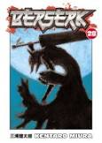

Harry Potter e o enigma do Príncipe
![Capa do livro Harry Potter]()
Sinopse
Lá estava, pairando no céu sobre a escola: o crânio verde flamejante com uma língua de cobra, a marca deixada
pelos Comensais da Morte sempre que entravam em um prédio... sempre que matavam...
Quando Dumbledore chega à Rua dos Alfeneiros numa certa noite de verão para buscar Harry Potter, a mão com
que segura a varinha está enrugada e enegrecida, mas ele não revela o motivo. Segredos e suspeitas se
espalham pelo Mundo Bruxo, e a própria Hogwarts não é mais segura. Harry está convencido de que Malfoy porta
a Marca Negra: há um Comensal da Morte entre eles. Harry precisará de magia poderosa e amigos verdadeiros
para explorar os segredos mais sombrios de Voldemort, e Dumbledore se prepara para encarar seu destino...
Fonte: Google Books
| Data |
Autor |
Idioma Original |
Gêneros |
Número de páginas |
Editora |
| 16 de julho de 2005 |
J.K. Rowling, Lia Wyler |
Inglês |
Romance, Ficção juvenil, Literatura fantástica, Ficção de aventura |
512 |
Bloomsbury |
Breves respostas para grandes questões
Sinopse
Em textos inéditos, o físico e autor do best-seller Uma breve história do tempo nos presenteia com seus
pensamentos finais sobre as maiores perguntas da humanidade.
Desde Einstein, o mundo não via um cientista tão reverenciado quanto Stephen Hawking. Com seu trabalho
revolucionário em física e cosmologia, ele encantou milhões de leitores com as origens do universo e a
natureza dos buracos negros, além de inspirar a todos pela coragem e determinação que exibiu em sua luta
contra a doença do neurônio motor. Agora, nesta reunião póstuma de seus trabalhos, ele expõe seus
pensamentos a respeito das grandes questões que povoam nossas mentes desde os primórdios e daquelas mais
prementes na atualidade.
Somos conduzidos assim a suas reflexões sobre a origem do universo, a existê...
Fonte: Google Books
| Data |
Autor |
Idioma Original |
Gêneros |
Número de páginas |
Editora |
| 16 de outubro de 2018 |
Stephen Hawking |
Inglês |
Biografia, Autobiografia |
254 |
Intrinseca |
O guia do mochileiro das galáxias

Sinopse
Considerado um dos maiores clássicos da literatura de ficção científica, O Guia do Mochileiro das Galáxias
vem encantando gerações de leitores ao redor do mundo com seu humor afiado.
Este é o primeiro título da famosa série escrita por Douglas Adams, que conta as aventuras espaciais do
inglês Arthur Dent e de seu amigo Ford Prefect.
A dupla escapa da destruição da Terra pegando carona numa nave alienígena, graças aos conhecimentos de
Prefect, um E.T. que vivia disfarçado de ator desempregado enquanto fazia pesquisa de campo para a nova
edição do Guia do Mochileiro das Galáxias, o melhor guia de viagens interplanetário.
Mestre da sátira, Douglas Adams cria personagens inesquecíveis e situações mirabolantes para debochar da
burocracia, dos políticos, da "alta cultura" e de diversas instituições atuais. Seu livro, que trata em
última instância da busca do sentido da vida, não só diverte como também faz pensar.
Fonte: Google Books
| Data |
Autor |
Idioma Original |
Gêneros |
Número de páginas |
Editora |
| 12 de outubro de 1979 |
Douglas Adams |
Inglês |
Ficção científica, Romance, Humor, Ficção humorística, Ficção científica cômica |
208 |
Arqueiro |
Vagabond, Vol. 30
Sinopse
Takehiko Inoue, criador indicado ao Eisner, aclamado pela crítica, aborda a vida de Miyamoto Mushashi.
Transcende o potencial do que o mangá pode ser.
Esforçando-se pela iluminação por meio da espada, Miyamoto Musashi está preparado para cortar qualquer um
que esteja em seu caminho. Vagabound é um retrato cheio de ação da vida e dos tempos do guerreiro-filósofo
por excelência - o samurai mais celebrado de todos os tempos!
Com a perna direita gravemente ferida, Musashi é forçado a dar um passo para trás na espiral traiçoeira da
batalha de vida ou morte. Incerto sobre seu futuro, ele tem certeza de uma coisa - ele quer estar onde já
esteve, quando podia ver tudo, mas interconectado em sua totalidade. Mas o que ele terá que fazer para
chegar lá novamente?
Fonte: Google Books, Google
| Data |
Autor |
Idioma Original |
Gêneros |
Número de páginas |
Editora |
| 17 de novembro de 2009 |
Takehiko Inoue |
Japonês |
Romance gráfico |
216 |
Panini |
Berserk Volume 28

Sinopse
Guts, o Espadachim Negro, e seus companheiros finalmente chegaram ao mar, onde descobrem uma criança
misteriosa que parece compartilhar um vínculo especial com Guts e sua ex-amante, a agora louca Casca. A
breve pausa da trupe na praia oferece momentos de introspecção silenciosa e união mais profunda, mas essa
paz é sempre de curta duração quando Guts está envolvido, e Guts deve mais uma vez vestir a demoníaca
Berserker Armor para enfrentar uma força de bestas sanguinárias que emergem do outrora pacífico,
possuído pela feitiçaria amaldiçoada de um poderoso feiticeiro de Kushan! E quem sabe o que acontecerá
quando conflitos internos empurrarem um membro do bando de Guts, sem saber, para a reconfortante companhia
de um inimigo!
Fonte: Google Books, Google
| Data |
Autor |
Idioma Original |
Gêneros |
Número de páginas |
Editora |
| 28 de fevereiro de 2005 |
Kentaro Miura |
Japonês |
Mangá, Seinen, Fantasia, Tragédia |
224 |
Panini |